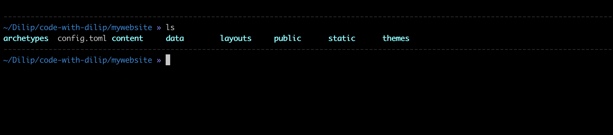
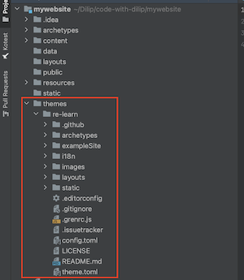
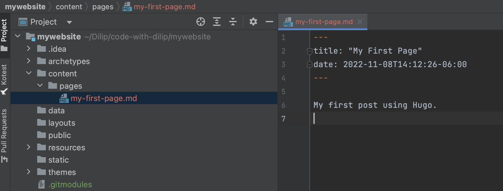
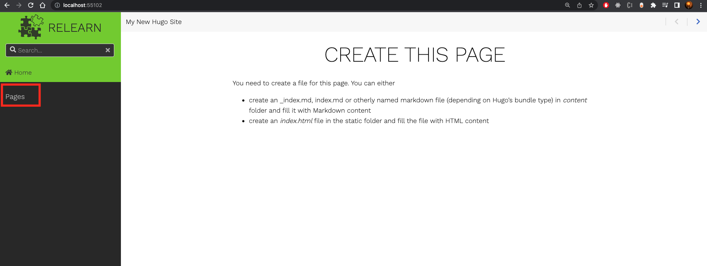
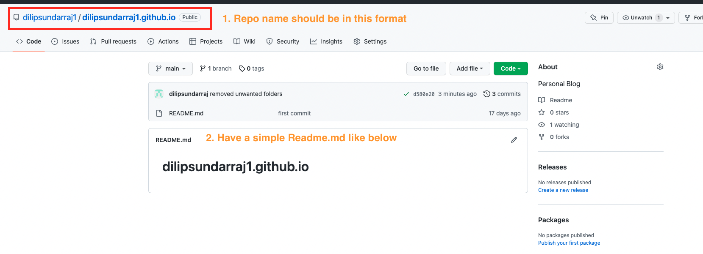
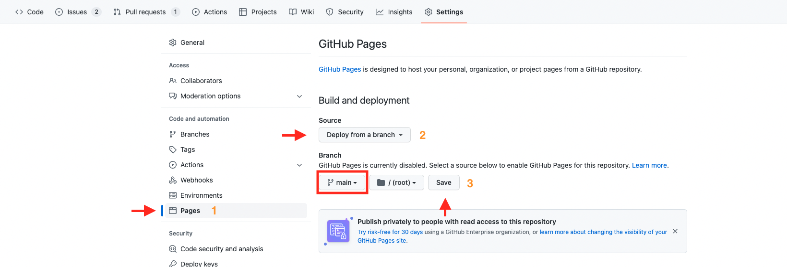
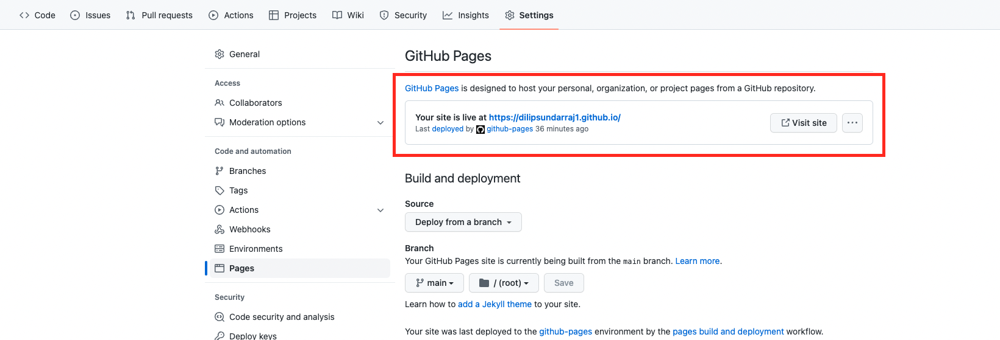
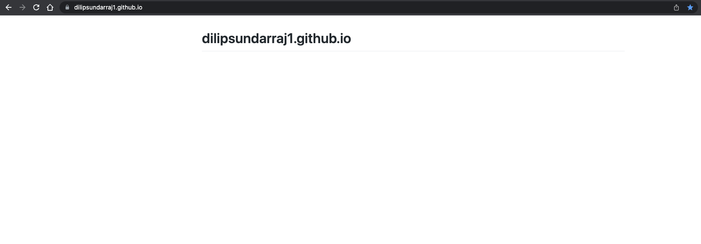
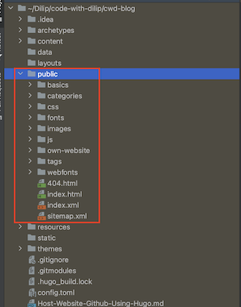
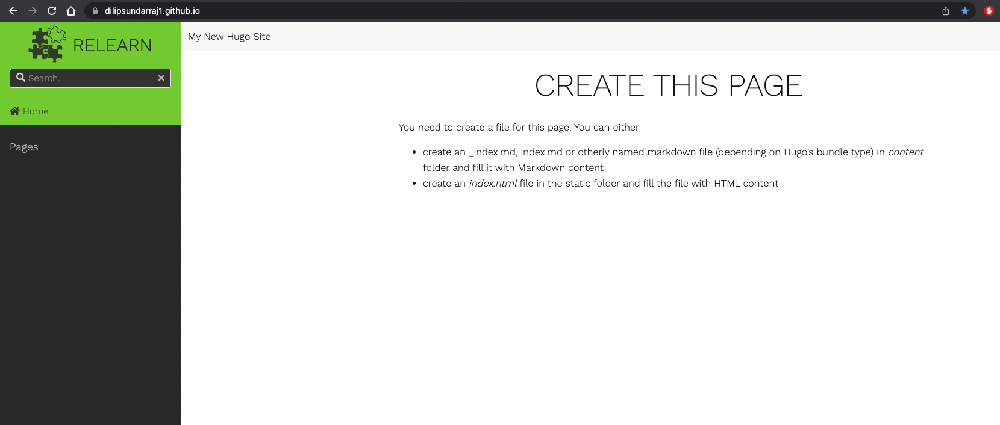

Build a Website Using Hugo & Host in GitHub Pages
This article explains about how to build a website using Hugo and host it in GitHub-Pages
Introduction
In this article, I will take you all step by step to build a website using Hugo and host it using GitHub Pages
- For any developer out there, having a website is a great way to share knowledge to the outside world.
Prerequisites
- Hugo needs to be installed in your machine
- Knowledge of working with Github is required
What is Hugo ?
- Hugo is one of the most popular open-source static site generators. With its amazing speed and flexibility, Hugo makes building websites fun again.
- The nicest thing is that , it helps you to build a website by writing your content in mark down.
- More info about Hugo can be found in this link
Let’s Build a Website using Hugo
The steps are clearly defined in this Hugo Getting Started section
Step 1: Install Hugo
First verify hugo installed in the machine.
hugo version
Install hugo by running this command. I am going to explain cover the hugo installation using mac in this article.
brew install hugo
- Using Windows or any other OS then please refer this link
Step 2: Create a Project Template
Now let’s create a template for the hugo website by running the below command.
hugo new site mywebsite
- Note: mywebsite is the name of the project. It could be any name you wish for your project.
You should have a project structure like below.

Step 3: Install a Theme
Themes are necessary for any website that we build using Hugo because it defines the layout of the website.
You can find all different themes in this link
In this article, I am going to demonstrate how to use Relearn theme.
Why Relearn Theme ?
- I really like the Relearn theme because it performs the text search across the whole content of the project
- It has a very nice Hierarchical structure in which you can nest multiple topics
- You can add a topic and add multiple subtopics under a topic which aligns very nicely for the user to navigate through the topics step by step
Note : This website is built using the Relearn theme.
Let’s install theme in our project
Run the below commands to install the Relearn theme
cd mywebsite
git init
git submodule add https://github.com/McShelby/hugo-theme-relearn.git themes/re-learn
You should notice the re-learn folder under the themes directory after the above command is executed.

Open the config.toml file and add the theme property to it like below.
- The value should match the folder name under themes directory
- In this case it’s re-learn
config.toml file should be like below.
baseURL = 'http://example.org/'
languageCode = 'en-us'
title = 'My New Hugo Site'
theme = "re-learn"
Step 4: Lets add a page to our website
The pages should be under the content folder. So we are going to run the below command, it will create a new page in the content folder.
hugo new pages/my-first-page.md
You will find a .md like below in your project. Make sure to remove the draft: true in the file
Let’s add this text to the file.
My first post using Hugo.

Step 5: Run the website in our Local
Now it’s time to test the website in our local
Run the following command:
hugo serve
You will notice the following output:
port 1313 already in use, attempting to use an available port
Start building sites …
hugo v0.102.3+extended darwin/arm64 BuildDate=unknown
| EN
-------------------+------
Pages | 10
Paginator pages | 0
Non-page files | 0
Static files | 186
Processed images | 0
Aliases | 0
Sitemaps | 1
Cleaned | 0
Built in 141 ms
Watching for changes in /Users/Z001QGD/Dilip/code-with-dilip/mywebsite/{archetypes,content,data,layouts,static,themes}
Watching for config changes in /Users/Z001QGD/Dilip/code-with-dilip/mywebsite/config.toml, /Users/Z001QGD/Dilip/code-with-dilip/mywebsite/themes/re-learn/config.toml
Environment: "development"
Serving pages from memory
Running in Fast Render Mode. For full rebuilds on change: hugo server --disableFastRender
Web Server is available at http://localhost:55102/ (bind address 127.0.0.1)
In my machine , the website the running this address http://localhost:55102/
- You might see a different port in your machine
Open a browser and hit the address printed in the console. In my case, it’s this address http://localhost:55102/

Our brand-new website using the Re-learn theme is ready to use.
We are able to notice the Pages section in the sidebar and this aligns to the folder structure inside the content folder.
Click on the Pages, and then you will be able to notice My First Page that we created in Step 4.
This wraps our Website development using Hugo static website generator
Host the Website using GitHub pages
Github pages is a static stite hosting service that takes HTML, CSS and JavaScript files straight from a repository on Github and publishes a website.
Why GitHub pages?
- If you are a developer it’s pretty common to have experience working with Github.
- This already gives us the advantage to not having to learn another tool or technology.
Let’s Host the Website now in GitHub
Step 1: Create a public repository
The repository name should be «username».github.io
In my case, my github username is dilipsundarraj1 , so I am going to create a public repository with this name dilipsundarraj1.github.io

- Make sure the repo name matches the format.
- Have a simple README.md with a text like below.
Step 2: Lets host the README using Pages
Let’s navigate to Settings of the repo.
Settings -> Pages -> Select the "main" branch -> Save

This should trigger a build and you can check in the Actions tab
Once the build completes then you will notice the site being live in this https://dilipsundarraj1.github.io/
You will be able to notice the below highlighted section in the Settings page

Here is our README.md hosted live.

Step 3: Lets add our Hugo website content to this Github repo
Let’s generate the static content of our website that we built using hugo
Navigate to the mywebsite folder and run the below command:
hugo
You should be able tp notice the below output
~/Dilip/code-with-dilip/mywebsite (main) » hugo
Start building sites …
hugo v0.102.3+extended darwin/arm64 BuildDate=unknown
| EN
-------------------+------
Pages | 10
Paginator pages | 0
Non-page files | 0
Static files | 186
Processed images | 0
Aliases | 0
Sitemaps | 1
Cleaned | 0
Total in 186 ms
You should be able to notice all the content in the public folder of our project

Step 4: Let’s add this content to the github repo we created
Clone the dilipsundarraj1.github.io project in to our local
git clone git@github.com:dilipsundarraj1/dilipsundarraj1.github.io.git
Move the content from mywebsite/public folder to the dilipsundarraj1.github.io folder.
mv mywebsite/public/* ~/Dilip/code-with-dilip/dilipsundarraj1.github.io
Now its time push the copied folders and all the content to the dilipsundarraj1.github.io repo in github
git add .
git commit -am 'adding all the content'
git push
This should trigger a build in GitHub , you might be able to notice the same in the Actions tab of the github repo.
Once the build completes , navigate to this link https://dilipsundarraj1.github.io/

Congrats, you have successfully hosted your website that’s built in Hugo using GitHub pages
Conclusion
In this article, we have learnt how to build a website using Hugo and successfully host it in GitHub.